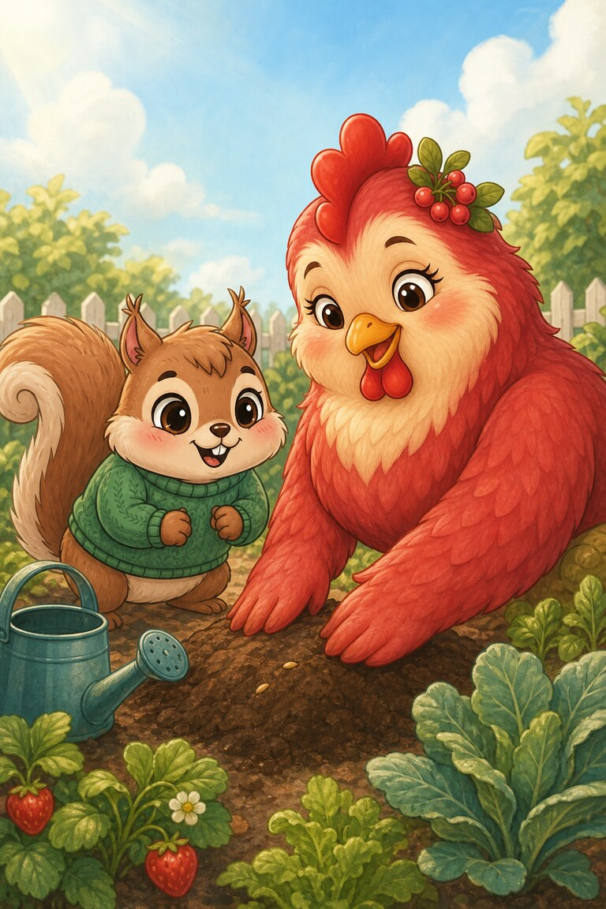
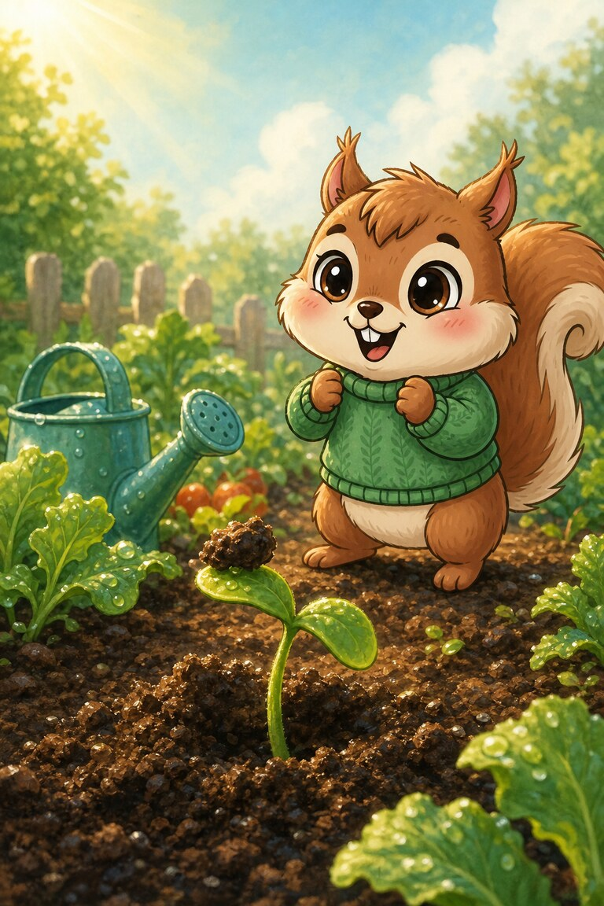
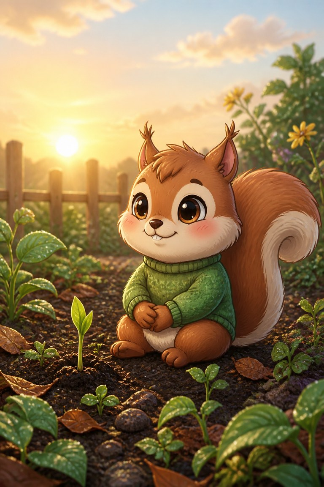

Page 1 of 4
Nutmeg tucks one tiny seed into the earth and checks it again before lunch. Nothing has happened. She checks after lunch too.
A four-page garden story about a seed, a lot of waiting and growth you cannot see.
Nutmeg tucks one tiny seed into the earth and checks it again before lunch. Nothing has happened. She checks after lunch too.

Hen-Berry gently covers the soil again. “Growing can be busy work even when we cannot see it,” she says.

Nutmeg waters, waits, and nearly gives up. On the seventh morning, a green sprout lifts a crumb of earth like a tiny hat.

The garden is still small, but Nutmeg no longer calls it empty. She has learned that some important changes begin where nobody can watch them.
A sprout.
SnackPack Sentences & Spelling has many more short reads like this one, plus the Reading Trail, word packs and literacy games.
Next storyCaptain Beakon’s Star Watch
Know a family or class who would enjoy it?